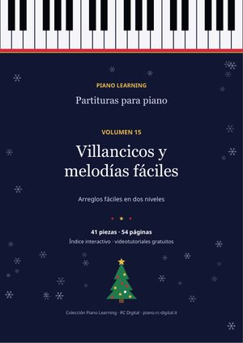
Volumen 15Villancicos y melodías fáciles41 piezas · 54 páginas3,99 €Comprar
Piano Learning · PDF
564 piezas · 1.933 páginas de música · 14 volúmenes · 10 idiomas
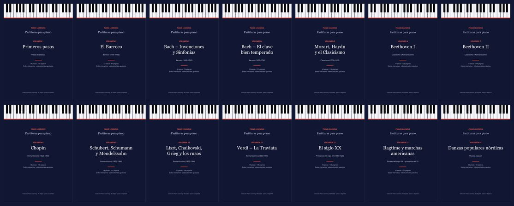
Los 14 volúmenes: 564 piezas, 1.933 páginas de música.
55,86 €19,99 €−64%

Volumen 15Villancicos y melodías fáciles41 piezas · 54 páginas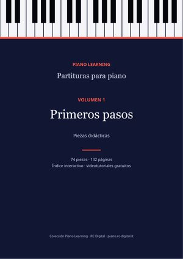
Volumen 1Primeros pasos74 piezas · 132 páginas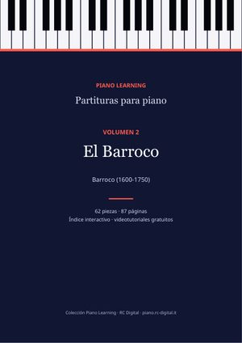
Volumen 2El Barroco62 piezas · 87 páginas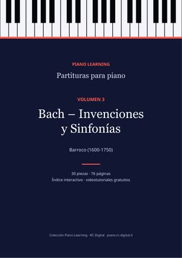
Volumen 3Bach – Invenciones y Sinfonías30 piezas · 76 páginas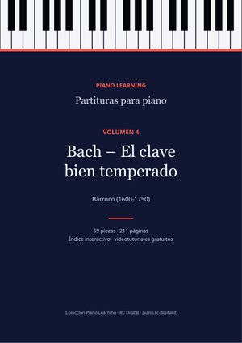
Volumen 4Bach – El clave bien temperado59 piezas · 211 páginas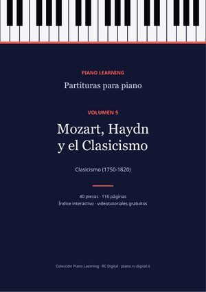
Volumen 5Mozart, Haydn y el Clasicismo40 piezas · 116 páginas Volumen 6Beethoven I18 piezas · 125 páginas
Volumen 6Beethoven I18 piezas · 125 páginas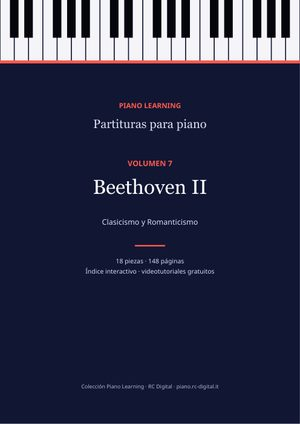
Volumen 7Beethoven II18 piezas · 148 páginas Volumen 8Chopin46 piezas · 186 páginas
Volumen 8Chopin46 piezas · 186 páginas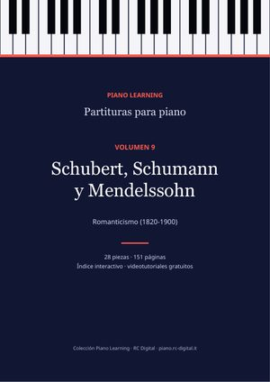
Volumen 9Schubert, Schumann y Mendelssohn28 piezas · 151 páginas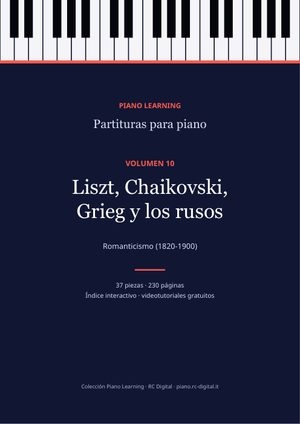
Volumen 10Liszt, Chaikovski, Grieg y los rusos37 piezas · 230 páginas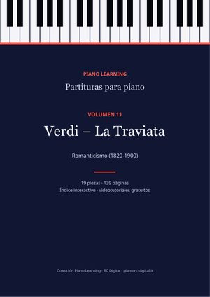
Volumen 11Verdi – La Traviata19 piezas · 139 páginas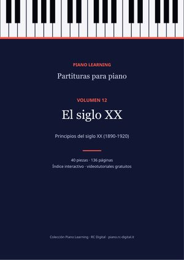
Volumen 12El siglo XX40 piezas · 136 páginas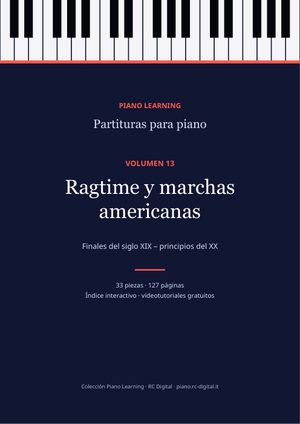
Volumen 13Ragtime y marchas americanas33 piezas · 127 páginas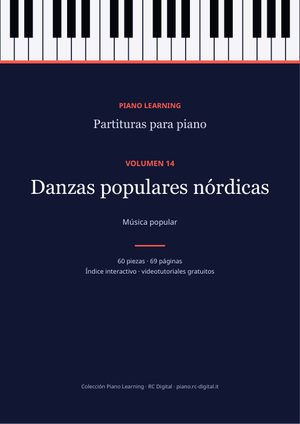
Volumen 14Danzas populares nórdicas60 piezas · 69 páginasTocas un título del índice y ya estás en la página correcta. También hay marcadores.
Unas líneas para saber quién escribió la música que estás tocando.
De la partitura al vídeo con las notas que caen, en cada pieza que lo tiene.
Con una sola compra descargas la edición en el idioma que prefieras.
La primera página de cuatro piezas de la colección. Toca una página para abrir la pieza.
En PDF. Puedes abrirlas en el ordenador, la tableta y el móvil, y también imprimirlas. Cada volumen es un único archivo con índice interactivo y marcadores.
Cada compra incluye la edición en 10 idiomas: italiano, inglés, alemán, español, francés, portugués, ruso, chino, japonés y coreano. Descargas la que prefieras.
Justo después del pago se abre la página de descarga y recibes un correo con el enlace. Cada volumen suelto es un PDF; la colección completa es un archivo ZIP por idioma con los 14 PDF (unos 50 MB).
Sí. Son ediciones libres (dominio público o Creative Commons) y en las páginas de este sitio tienes el enlace gratuito, pieza por pieza. Con la colección las tienes todas ordenadas por compositor y época, con índice, biografías, enlaces a los tutoriales y los créditos completos de cada edición.
No. El Volumen 15, «Villancicos y melodías fáciles», se compra aparte por 3,99 €. La colección completa incluye los volúmenes 1 a 14.
Pago seguro con Payhip y descarga inmediata por correo electrónico. Las partituras son ediciones libres (dominio público o Creative Commons): también las encuentras gratis, pieza por pieza, en las páginas de este sitio; aquí las tienes todas ordenadas en un solo archivo, con los créditos completos de cada edición.